Sets of constraints holding these components are given as below.
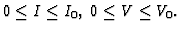
I: output current
I0: upper limit of output current
V: output voltage
V0: upper limit of output voltage
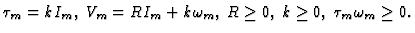
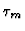
: output torque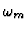
: output angular velocity
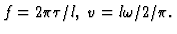
f: output force
v: output velocity
:
input angular velocity
l: lead
Battery's output voltage and current are the same as DC motor's input voltage and current, and DC motor's output torque and angular velocity are the same as ball thread's input torque and angular velocity. Furthermore, ball thread's output force and velocity are identical with the output force and velocity of the robot hand. Therefore, whole the constraints holding the linear-armed robot are given as Eq. (8).
Let Eq. (9) be the given requirement to the linear-armed robot.
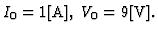
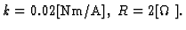
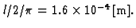
Suppose that the designer likes to determine the output velocity of the robot hand and gives a constraint ``
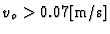
0.07\mbox{[m/s]}$">'' to the algebraic under constraint solver. Then, all the inequalities are transformed into a form of equation by introducing slack variables, the reduction tree is constructed, and inconsistency is found among the following constraints.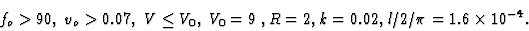
90,\; v_{o} > 0.07,\; V \leq V_{0},\; V_{0} = 9\;, R = 2, k = 0.02, l/2/\pi=1.6 \times 10^{-4}.\end{displaymath}">The designer may relax the constraint about the output velocity vo and replace the constraint `` 0.07\mbox{[m/s]}$">'' by a new one ``
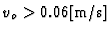
0.06\mbox{[m/s]}$">''. Then, any inconsistency is found at the symbolic part of the algebraic under constraint solver, and the following numerical solution is computed by the numeric part.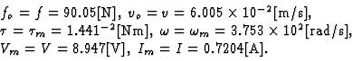